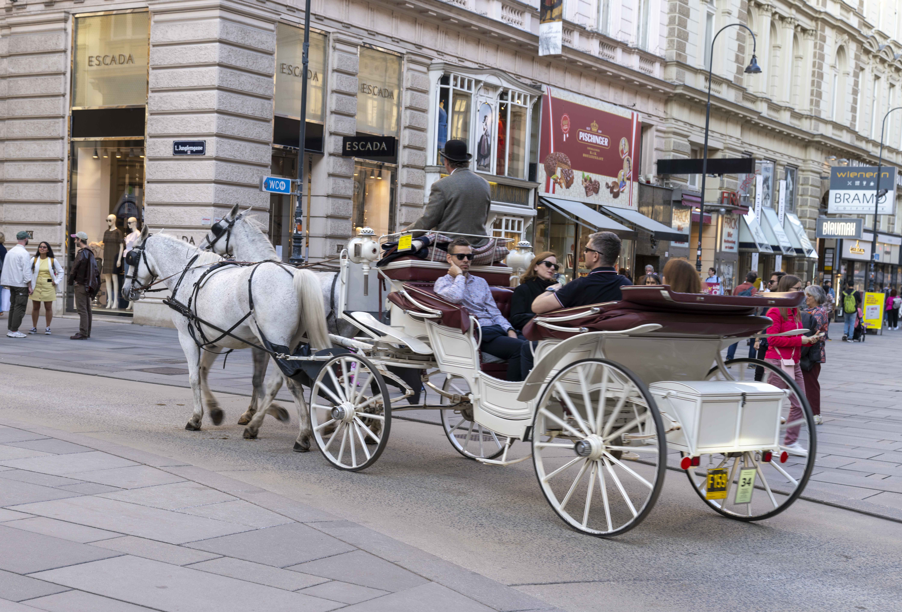
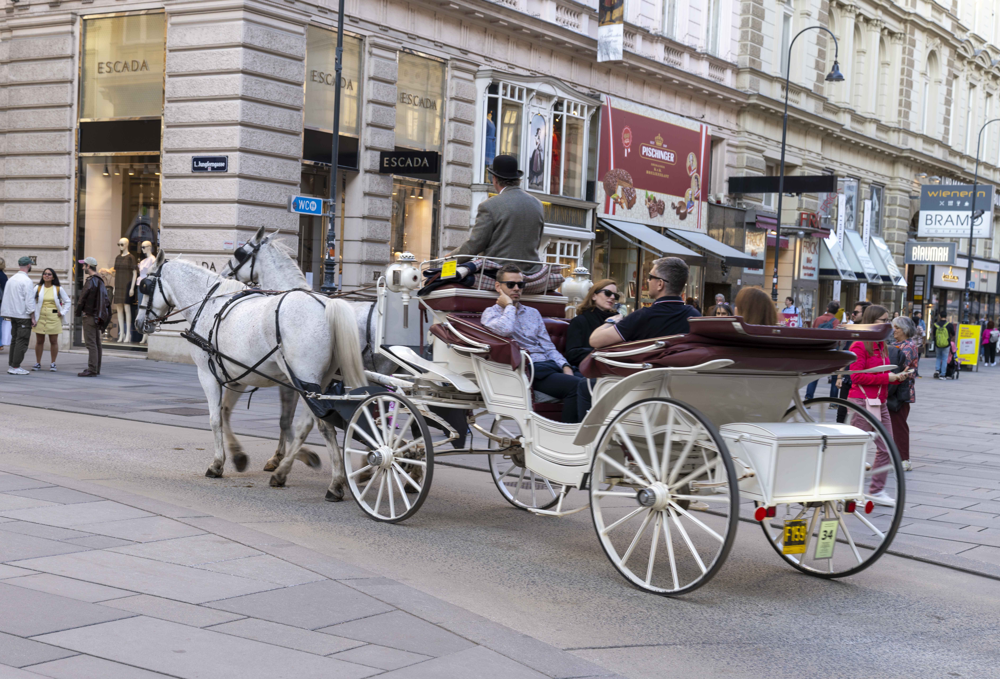

初到维也纳，当然是要去金色大厅看一看，well，本身并没有太惊艳到我。但是随后逛街带来多种多样的18 19 世纪建筑风格让我大为享受，此行不虚。
在波屯呆久了真有点问题了，现在去别的地方都想着要去品鉴下当地的麦当劳了，好家伙，巴黎我吃了顿，这边我第一顿也是。甚至第一家因为visa卡刷不成功后，我又遮莫进另外一家麦当劳，简直抽象。还是得多试试当地菜色，而不是一心汉堡薯条。
主要建筑
卡尔教堂（Karlskirche）
这座巴洛克风格的教堂建于18世纪初，是维也纳最具代表性的宗教建筑之一。由建筑师约翰·伯恩哈德·费舍尔·冯·埃尔拉赫（Johann Bernhard Fischer von Erlach）设计，教堂以其宏伟的圆顶和两根仿罗马凯旋柱而闻名。内部装饰华丽，设有观景电梯，可近距离欣赏穹顶壁画。
巴洛克（Baroque）
融合特色：卡尔教堂不仅是巴洛克艺术的巅峰作品之一，还融合了古典主义和东方元素，体现出极具创意的跨文化设计。

维也纳音乐协会金色大厅（Musikverein）
新古典主义（Neoclassicism）：
建筑整体严格对称，比例均衡，强调简洁的线条和古典柱式（特别是爱奥尼柱式和科林斯柱式）。
历史主义（Historicism）：
内部装饰吸收了大量古希腊、古罗马元素，并结合了19世纪的审美趣味（比如更加华丽、金碧辉煌的装饰）。


Kasino am Schwarzenbergplatz 是维也纳布尔格剧院（Burgtheater）的附属剧场之一，位于施瓦岑贝格广场（Schwarzenbergplatz）1号。该建筑最初是为弗朗茨·约瑟夫一世皇帝的弟弟路德维希·维克多大公（Archduke Ludwig Viktor）而建的宫殿。

维也纳国家歌剧院（Wiener Staatsoper）
新文艺复兴风格是在19世纪流行的一种复古潮流，模仿和再现15世纪到16世纪意大利文艺复兴时期的建筑元素，但又加入了19世纪的工程技术和美学理解。


维也纳圣斯蒂芬大教堂（St. Stephen’s Cathedral / Stephansdom）


维也纳瘟疫纪念柱（Pestsäule / Plague Column）

典型的高巴洛克（High Baroque）雕塑艺术。
极致的动态感、戏剧性张力、密集的雕刻群体现象。
扫街


 


建筑风格
巴洛克建筑风格特点
- 强调宏大与壮丽
建筑体量巨大，布局恢宏，给人一种强烈的视觉震撼。
常见大穹顶、高塔、巨大的立柱，显得极其威严和神圣。
- 富有动态感和戏剧性
建筑线条流畅、曲面丰富，强调运动感（比如弯曲的墙面、旋转的楼梯）。
整体布局通常不是完全对称的，而是通过变化产生节奏感，给人一种“正在运动”的感觉。
讲究光影效果，比如大窗户、穿透性结构，使内部光线明暗交替，制造戏剧氛围。
- 极度装饰化
表面装饰极为繁复，比如浮雕、雕像、灰泥装饰（stucco）、壁画、镀金。
每一个细节（如窗框、门饰、拱顶）都被艺术化处理，从不留白。
- 强烈的宗教性象征
在天主教国家（尤其意大利、西班牙、奥地利），巴洛克建筑常作为反宗教改革（Counter-Reformation）的一种工具，借建筑本身来表达荣耀、信仰和权威。
教堂建筑尤其注重祭坛、圆顶、光线与空间感的结合，营造一种直达天堂的感受。
- 融合绘画与雕塑
建筑往往与大型壁画、穹顶画、雕塑群体融为一体，不再是单一功能空间，而是一个完整的“综合艺术作品”（Gesamtkunstwerk）。
比如教堂内部顶棚上绘有错觉画（Illusionistic Ceiling Painting），让人仿佛看到天堂的景象。
- 对古典元素的自由运用
使用古典柱式（如多立克柱式、爱奥尼柱式、科林斯柱式），但处理方式自由奔放。
常打破古典建筑的严格比例，强调夸张与复杂，而不是简单与和谐。
| 巴洛克建筑 | 新古典主义建筑 | |
|---|---|---|
| 整体感觉 | 动态、戏剧性、复杂、夸张，充满情感。 | 静态、理性、简洁、对称，注重秩序。 |
| 线条与形状 | 曲线丰富（螺旋柱、波浪墙、椭圆穹顶），强调流动感。 | 线条笔直、边缘清晰，强调几何形体。 |
| 光影处理 | 强烈对比（明暗交替），营造戏剧效果。 | 光线均匀平和，不追求强烈对比。 |
| 装饰 | 极其华丽、繁复，满是浮雕、壁画、雕塑、镀金。 | 装饰克制，表面朴素，强调比例与简洁。 |
| 特点维度 | 新古典主义（Neoclassicism） | 新文艺复兴（Neo-Renaissance） | 新艺术运动（Art Nouveau / Jugendstil） |
|---|---|---|---|
| 整体感觉 | 克制、庄重、端正、有份量 | 秩序感＋丰富细节，庄重中带活跃 | 自由、流动、轻盈、艺术性强 |
| 立面线条 | 多直线、强调平直对称 | 水平线条突出、细节活跃 | 曲线为主，轮廓柔软自然 |
| 窗户造型 | 简洁矩形，少雕饰 | 上方有三角形或弧形窗楣，窗户之间有立柱 | 窗框灵活变形，有花纹或植物装饰 |
| 装饰元素 | 少量花纹，强调比例、简洁 | 浮雕丰富，有神话、盾徽、花饰等 | 大量藤蔓、花卉、女性形象，图案自由流动 |
| 顶部屋檐 | 稳重大檐口，平直线条 | 带细节雕花的檐口，强调层次 | 屋顶轮廓往往起伏波浪状 |
| 色彩风格 | 素色（白、浅灰、米色） | 素色主调，细节可略加彩绘 | 通常浅色，结合局部金色或彩绘点缀 |
| 时代 | 1780s-1850s（主流期） | 1850s-1890s | 1890s-1910s |
哥特式建筑特点
尖塔和垂直感（Verticality）
建筑整体给人一种向上生长的感觉，追求高耸入云，象征接近上帝。使用大量尖顶（Spire）、细长的塔楼。尖拱（Pointed Arch）
最典型的结构元素，代替了早期罗马式建筑中的圆拱。尖拱能更好分担垂直压力，让建筑更高、更轻盈。飞扶壁（Flying Buttress）
外墙外侧有像“支架”一样的拱臂，把屋顶和墙体的压力向外传递到地面。这样可以开更大的窗户，同时建筑不会坍塌。大面积彩色玻璃窗（Stained Glass Windows）
墙体减重后，窗户可以做得极大，填满彩绘玻璃，讲述圣经故事。最著名的形式是玫瑰窗（Rose Window），通常布置在正立面。复杂雕刻（Rich Ornamentation）
门廊、墙面、柱头上都有密密麻麻的宗教雕塑，如圣人、天使、恶魔（石像鬼Gargoyle）等。既美化建筑，又具有宗教教育意义。肋骨拱顶（Ribbed Vault）
拱顶内部用交叉的骨架（肋骨）支撑，可以让拱顶更轻更稳定。也是一种强调建筑内部骨骼感的设计。光与神圣感（Light and Divinity）
通过高耸空间和丰富彩光，制造出梦幻、超凡脱俗的宗教氛围。

巴洛克式动感
雕像整体布局非常动态、富有情感。人物姿势不是直立静止，而是扭转、伸展、转头，非常有张力（典型巴洛克表现“剧场感”）。科林斯柱（Corinthian Order）
三根支撑上方顶棚的柱子是科林斯柱式，柱头有精美的卷曲叶饰（Acanthus leaves）。柱子高大细长，强调垂直感，但顶部装饰异常丰富，给人一种华丽庄严的印象。顶棚和金色装饰
顶部装饰了巴洛克式繁复雕花，还有明显的金色元素（比如中央顶端的金属雕塑）。金色在巴洛克建筑中代表荣耀、光辉、神圣感。
新古典主义

巨大的柱式
中间是贯穿两三层的巨柱（巨柱式 Giant Order），每根柱子顶部有科林斯柱头（Corinthian Capital，带叶子的那种精美花纹）。巨柱式是新古典主义的典型特征，强调垂直感和宏伟气势，参考了古希腊、古罗马的神庙建筑。对称布局
中心大门非常突出，两边窗户严格对称分布，整体非常规整典雅。丰富的浮雕与细节
每两根柱子之间的墙面上有精美的浅浮雕，表现出古典神话或象征性题材。檐口下还有希腊回纹（meander）式的连续装饰，非常典型。

新文艺复兴风格 Neo-Renaissance

立面装饰丰富：窗户上方都有复杂的窗楣（门窗帽），有三角形和弧形交替出现，表现出文艺复兴或巴洛克复兴风格的影响。
栏杆铁艺：阳台栏杆是精细的锻铁制成，这是19世纪末期常见的工艺元素。
厚重的石材感：墙体采用仿石材处理，强调建筑的稳重感和历史厚度。
水平线条感明显：通过连续的窗户排列、窗框装饰、阳台栏杆来强调建筑的水平延展，这也是新古典主义的一种影响。
墙面构图对称：左右基本对称，体现出传统西方建筑对秩序和比例的强调。


立面结构
严格的水平划分：楼层之间有明确的腰线和窗户分带，体现出文艺复兴建筑注重秩序和层次感的特征。每一层的窗户上方都有装饰性的窗楣，有些是三角形、有些是弧形，非常典型的新文艺复兴风格。丰富的细节
立面非常精致，不是简单的平面，而是有丰富的浮雕装饰、小柱子分隔窗户，整体给人一种“既理性又华丽”的感觉。窗户间有立柱和浮雕花饰，但不是巴洛克那种极端夸张的风格，还是强调古典比例。顶层设计
最顶层处理得很精致，有一圈细密的檐口（Cornice），带有小小的突出牙子装饰（Dentils），很有古典风格。

立面整体感觉, 极度对称。强烈的水平分层感（可以明显数出几层不同的窗带、栏杆带、装饰带）。每一层之间用不同的装饰元素过渡（比如浮雕腰线、栏杆、柱式）。
窗户特征
底层和二层窗户是连续的拱形窗（圆拱形），拱形的节奏感非常明显。中上层窗户变回了矩形，但每个窗口都有自己的框架、柱子、窗楣，遵循文艺复兴时期“每个窗户像小神庙一样”的审美。特别是一层和二层之间的连续圆拱，是典型文艺复兴（特别是意大利佛罗伦萨风格）的元素！立柱和人像雕塑
最底层入口两侧有雕刻成女性形象的柱子（阿特拉斯式雕塑柱），这是新文艺复兴常见的手法之一，用人形支撑建筑，增加人文与艺术性。屋顶与檐口
檐口上有非常经典的深挑檐（深厚而复杂的檐口，带着连续的方块和卷草装饰）。屋顶上方还有小型雕塑（人像或象征物），进一步呼应文艺复兴对雕塑与建筑结合的偏好。细节与色彩
整体是浅米黄色石材感立面（或仿石灰华效果），加深了仿古典建筑的厚重感。但因为比例掌握得好，所以不会显得压抑，依然有种文艺复兴时期追求的“黄金分割”般的优雅。

结构秩序感
每一层的窗户分隔极度均匀、对称、规矩；上下窗之间是标准的古典分段（窗楣-窗框-分隔线），新艺术运动建筑通常会打破这种严格秩序，让窗户形状自由组合甚至变形（像植物蔓延一样）。装饰主题
虽然这里浮雕比较精致，但还是以古典主题为主，比如：小天使（Putti）花环几何边框。真正新艺术风格（比如维也纳分离派）装饰内容应该是：藤蔓、百合花、女性头像、波纹曲线，而不是这些传统古典符号。窗型形态
这栋楼的窗户全是矩形或带轻微弧形的标准形状；
真正的新艺术风格窗口往往是：不规则半圆流线型，甚至窗框直接融化进墙体曲线。

结构与比例：非常清晰的水平分层：底层（商铺区）、主层（大窗户、雕饰丰富）、次层和顶层（小窗户、简化装饰）。整体强调横向延展感，楼层清晰分隔。
窗户设计：第一、二层窗户上方都有小型山花（有三角形和弧形交替），窗户配以半立柱，极其标准的新文艺复兴窗口构图。窗间隔有装饰柱带和浮雕小饰件，所有元素都来源于文艺复兴意大利宫殿式立面。
装饰特点：浮雕主题是传统的植物纹样、卷草纹、盾徽装饰。没有抽象化或极端简化，都是立体感很强的古典雕刻。
阳台：中央突出阳台，使用的是厚重的石制栏杆。阳台下方有大型石托（corbel brackets），强调古典力量感，而不是轻盈自由感。
墙面处理：下部是粗犷的Rustication（仿石材纹理处理），上部是较平滑的粉刷墙面，但仍然强调每层之间的水平分隔线（string course）。
Neo Baroque

外立面整体感觉
非常强调动感和豪华感，尤其是两侧突出的大圆形阳台（弧形突出的窗区），带有丰富雕饰。整个立面轮廓凹凸有致，绝不是新古典或新文艺复兴那种扁平或规矩对称，而是充满了巴洛克的立体动态感。雕塑与浮雕
一层立面有大型立体雕像（站立女性形象，抚触檐口），非常典型的新巴洛克手法。巴洛克风格喜欢把建筑和雕塑连为一体，形成动态的视觉整体。细节丰富、强调曲面
窗户之间不是简单的分隔，而是用复杂的雕刻窗框、圆形窗、半拱形、小阳台，让立面充满变化。特别是中轴线部分（中央部分）有强烈的纵向突出感，典型的巴洛克影响。屋顶
顶部有法式曼萨尔屋顶（Mansard Roof），有小圆窗（牛眼窗 oeil de boeuf）点缀，这种屋顶形式在巴洛克复兴中非常流行。屋檐下装饰繁复且深厚，形成压顶感。


历史主义末期（Late Historicism）向新艺术运动初期（Early Art Nouveau/Jugendstil）过渡的建筑。
整体布局：
还是基本对称、整齐的窗口排列，延续了新文艺复兴的理性骨架。但注意！窗户之间和窗顶的装饰明显变得更加流动、更加植物化，已经开始摆脱严谨的三角形、半圆形山花（pediments）传统。
窗户与阳台处理：
窗顶装饰（特别是中间突出的小阳台区域）已经是曲线形态，而不是死板的直线。小阳台使用了铁艺栏杆，铁艺图案带有一点自由曲线的感觉（虽然还不算非常奔放）。
墙面细节：
外墙表面虽然保留了条带分隔（类似rustication），但转角、窗户周围已经加入了轻盈的植物花纹、卷草纹（acanthus leaves那种造型）。中央突出的立面（avant-corps）上，特别是窗边和立柱旁，出现了柔和的装饰性植物浮雕，这是新艺术运动前期的典型特征。

茜茜公主博物馆所在的帝国总理府翼楼整体属于巴洛克建筑风格。由于其兴建于18世纪中期哈布斯堡皇室大规模扩建霍夫堡的时期，体现了奥地利高巴洛克宫殿建筑的典型特征。
新哥特式

新巴洛克（Neo-Baroque），并且带有非常明显的新哥特（Neo-Gothic）细节。
具体分析一下：
顶部绿色铜屋顶（Green Copper Roof）：这种绿色屋顶是巴洛克到新巴洛克时期非常流行的元素，常见于奥地利、捷克、德国地区的城市中心建筑。铜氧化后形成的绿色 patina，不仅防水，也成为了经典标志。屋顶形状复杂，有多个小型山墙（gabled dormers）和突出的雕塑。
外立面特征：立面垂直线条感很强，柱式与扶壁（buttress-like）装饰交错，加上细长窗户，带有新哥特风格（Neo-Gothic revival）的特点。丰富的雕像装饰，尤其在楼角和立柱上，可以看到大量的人物雕像和飞檐小雕塑（gargoyle风格）。
材质和颜色：采用的是仿石材面砖，石材分缝清晰，给人厚重、坚固的感觉。整体偏灰色调，与相邻更浅色的文艺复兴风格建筑（右边”Vienna Insurance”那栋）形成对比。
新艺术运动

整体布局：
- 立面上虽然窗户还是整齐排列，但立柱和窗户之间的面板拉得很长，垂直感极强，这是分离派建筑的鲜明特征。
- 建筑上半部分明显更为简洁、抽象，不再像历史主义那样追求大量繁复雕刻。
装饰细节：
- 每层窗户上方有浮雕图案，但浮雕不是传统古典人物，而是抽象、简化的人物和植物纹样。
- 图案是平面化的，不再追求立体深度感，这种”平面装饰性”正是新艺术分离派的特色。
阳台与栏杆：
- 小阳台配有铁艺栏杆，形式简单，线条柔和但不复杂，不再追求历史主义那种繁复铁艺卷曲。
墙面处理：
- 整面墙处理得非常简洁，底部用规则线条装饰，但没有厚重感。
- 中上部分几乎是素面，仅通过局部装饰元素打破单调。
材质与颜色：
- 采用明亮的浅色系（米白色、浅石色），符合新艺术运动倡导的清新感和现代感。